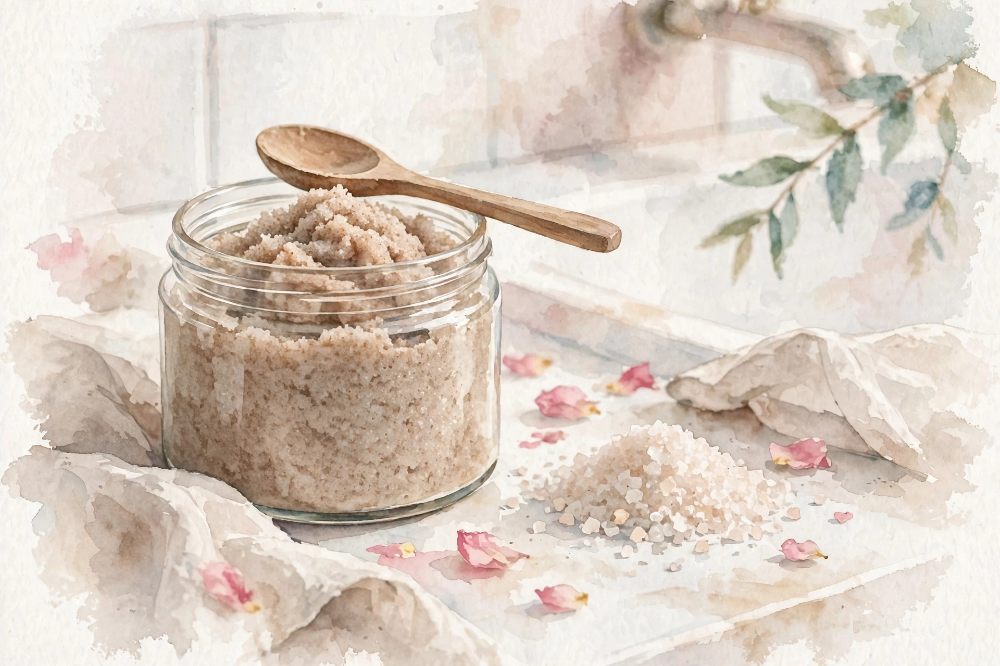

トップ ＞ ボディケア ＞ スクラブ系アイテムの頻度と部位の考え方
スクラブ系アイテムの頻度と部位の考え方

粒感のある質感が特徴のスクラブ系アイテムは、使い方の表示を守ることが特に大切な種類です。この記事では、作用の話ではなく、頻度と部位についての「表示の読み方」と「管理の仕方」に絞って整理します。
頻度は、表示の案内が絶対の基準
スクラブ系のアイテムには、「週に1〜2回を目安に」「連日の使用はお控えください」といった頻度の案内が表示されていることが多いです。この表示が、その商品を使う上での基準です。案内より頻度を上げる使い方は、表示の前提を外れるので避けます。頻度の表示が見当たらない場合は、間隔を長めに取って使うのが無難です。
頻度の管理は、カレンダーに印をつける方法が確実です。「前回いつ使ったか」を記録しておくと、間隔を空ける計画が立てられます。
部位の区分と、日を分ける管理
顔用と身体用は区分が分かれていることが一般的です。身体用のものを顔に使うといった流用は避け、それぞれの対象部位の表示に従います。身体の中でも、部位によって使う日を分ける管理をすると、1回あたりの手順が短くなり、頻度の管理もしやすくなります。たとえば、ひじ・ひざの日と、背中の日を分ける、といった分け方です。
使う部位について、避けるべき場所の案内が表示されている場合もあります。注意書きの部位指定は、使用前に必ず確認してください。
力加減は、表示の「こすり方」を読む
使い方の表示には、「強くこすらず、やさしくなじませてください」といった力加減の案内が書かれていることが多いです。粒の大きさや形状は商品ごとに異なり、力加減の前提も異なります。自分の感覚だけで判断せず、表示のこすり方の案内を基準にすることが、この種類のアイテムを使う上での基本です。
粒の素材についても、表示で確認できます。スクラブの粒には、砂糖や塩などの素材が使われることがあり、パッケージや原材料表示に書かれています。素材によって溶け方や感触が異なるため、表示の説明を読んでおくと、自分の好みとの照合ができます。保管については、浴室の中に置きっぱなしにすると水が入りやすい容器もあります。水が入ると質感が変わる場合があるため、脱衣所など乾燥した場所に保管し、使う分だけ浴室へ持ち込む運用も選択肢です。容器の口を清潔に保つことも、長く使うための基本です。
この記事は表示の読み方と頻度管理の案内です。表示の範囲を超えた使い方は避け、肌に合わない感じがした場合は使用をやめて、気になる場合は皮膚科などの専門家にご相談ください。
セラフィナ「頻度は表示が基準、カレンダーで管理。顔用と身体用の区分も必ず守ろう」